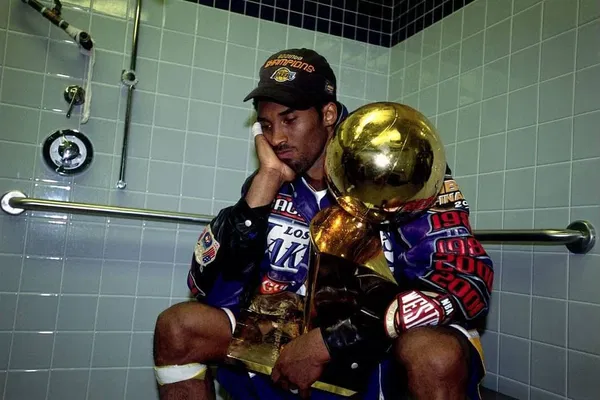
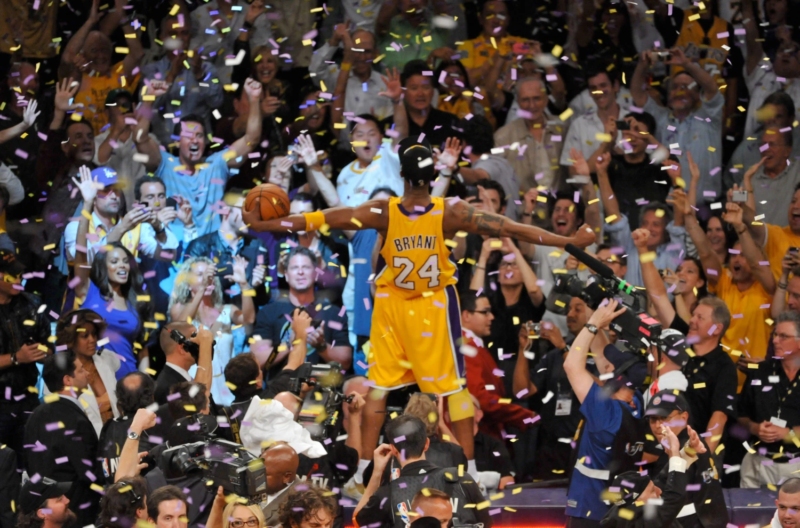

Kobe Bryant


Kobe Bryant, one of the most legendary figures in basketball, played his entire career with the Los Angeles Lakers. Here are some highlights of his incredible achievements:
Career Achievements:
- NBA Championships: 5 (2000, 2001, 2002, 2009, 2010)
- NBA Most Valuable Player (MVP) Award: 1 (2008)
- NBA All-Star Appearances: 18 (1998, 2000–2016)
- NBA Finals MVP: 2 (2009, 2010)
- NBA All-Defensive First Team: 12 times (2000–2004, 2006–2011)
- NBA Scoring Champion: 2 times (2006, 2007)
- Career Points: 33,643 (4th All-Time)
- Career Assists: 6,306
- Career Rebounds: 7,047
- Career Steals: 1,944
- Career Blocks: 640
All-Time Rankings:
- Points: 33,643 – 25.0 PPG (4th All-Time)
- Rebounds: 7,047 – 5.2 RPG
- Assists: 6,306 – 4.7 APG
- Steals: 1,944 – 1.4 SPG
- Blocks: 640 – 0.5 BPG
- Minutes Played: 48,637
- Field Goals Made: 13,002
- Field Goal Percentage: 44.7%
- Free Throw Percentage: 83.7%
- Three-Point Percentage: 32.9%
Single-Game Records:
- Most Points in a Game: 81 (career high)
- Most Assists in a Game: 14 (career high)
- Most Rebounds in a Game: 19 (career high)
- Most Steals in a Game: 7 (career high)
Notable Career Feats:
- Youngest player to reach 30,000 career points
- Only player to score 60 points in his final game
- Won back-to-back NBA Finals MVPs in 2009 and 2010
- Named to the All-NBA First Team 15 times
- Named to the NBA All-Defensive First Team 12 times
Hall of Fame Induction:
- 2020: Kobe Bryant was inducted into the Naismith Memorial Basketball Hall of Fame
Kobe wore two iconic jersey numbers throughout his career: #8 and #24. His unparalleled work ethic, scoring ability, and leadership defined his legacy in the NBA.